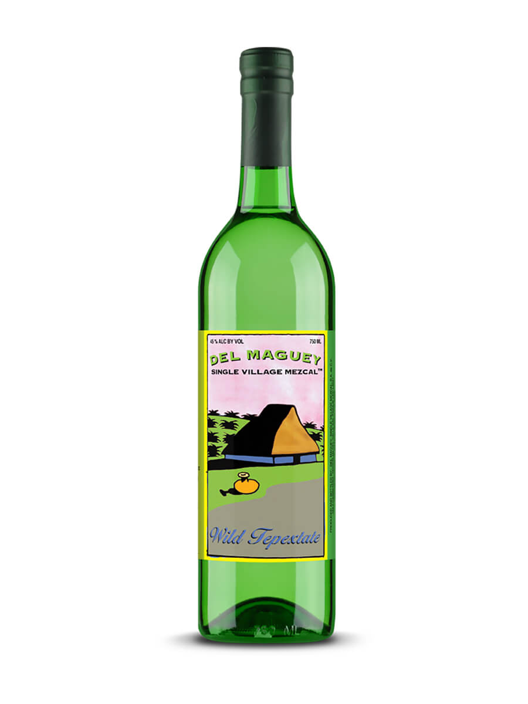
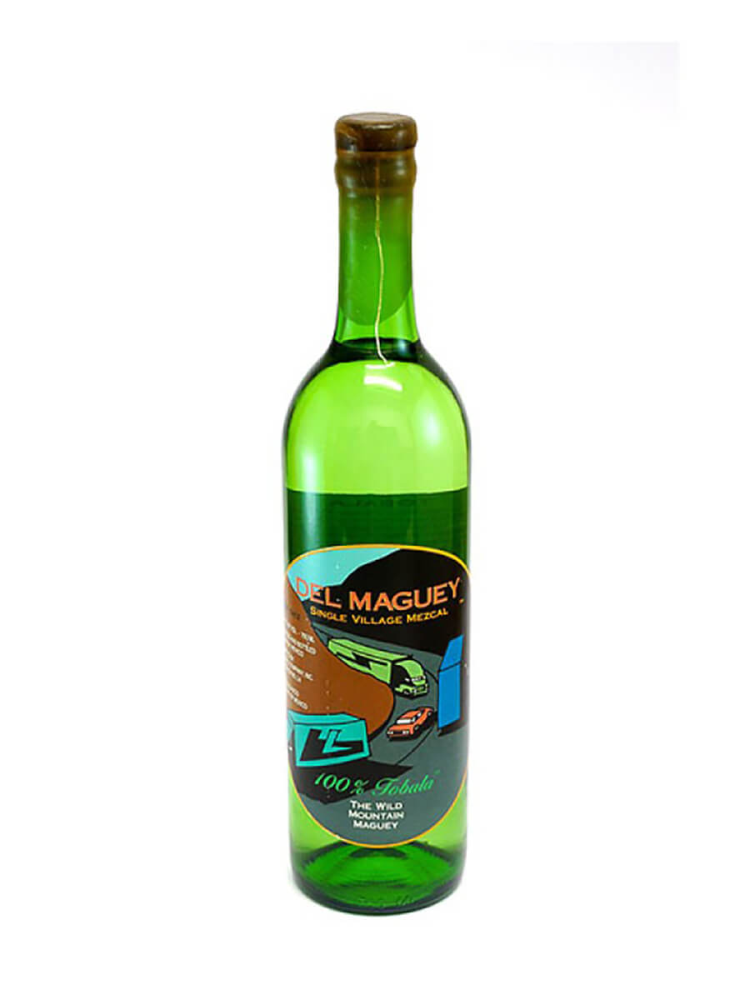
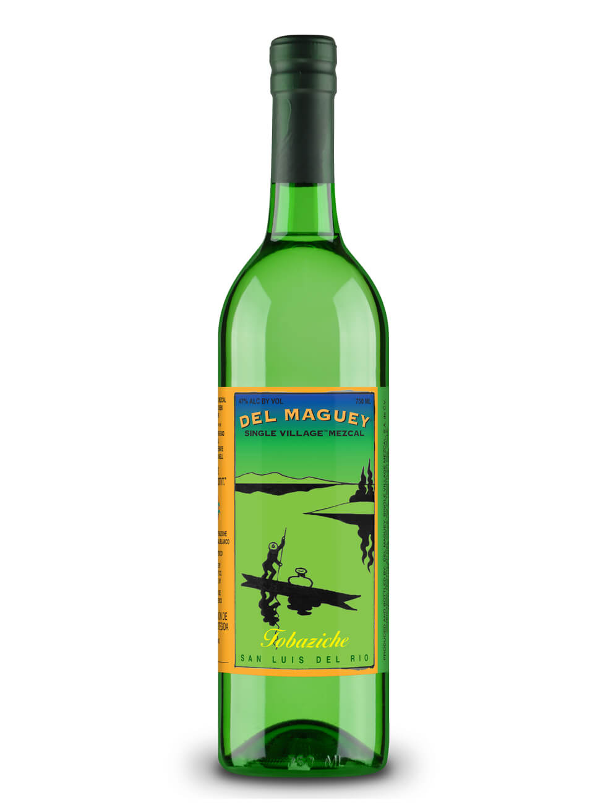

|
Del Maguey Tepaxtate

|
Tepaxtate |
Joven |
Santa Maria Albarradas |
45% |
Artisanal, small-batch distillation |
Complex, earthy, hints of smoke |
Delicate, roasted agave, herbal undertones, touch of sweetness
|
Clear, medium body |
would be great in an Old Fashioned |
|
Del Maguey Tobala

|
Tobala |
Joven |
Santa Maria Albarradas |
46% |
Artisanal, small-batch distillation |
Intense, floral, tropical fruit |
Complex, ripe agave, sweet spices, touch of minerality |
Clear, medium body |
Sip neat, on the rocks, or in premium cocktails |
|
Del Maguey Tobasiche

|
Tobasiche |
Joven |
San Luis del Rio |
47% |
Artisanal, small-batch distillation |
Complex, herbal, hints of smoke |
Vibrant, fresh agave, herbal undertones, subtle spiciness |
Clear, medium body |
Would be great in a negroni |